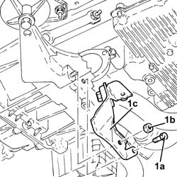
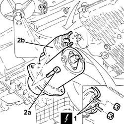
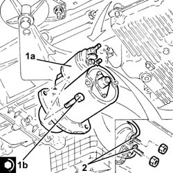
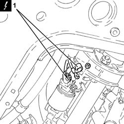
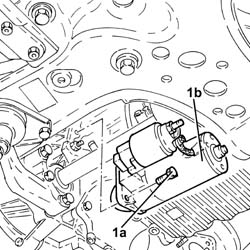
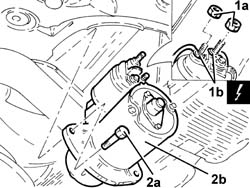

5520B10 STARTER MOTOR - R+R
- Path
- Procedures > 55 ELECTRICAL EQUIPMENT > 5520 ENGINE STARTING > 5520B STARTER MOTOR AND COMPONENTS > 5520B10 STARTER MOTOR - R+R
- Kind
- repair procedure (removal / refitting; the operation number is the code)
- Applies to
- engines: 1.8 T.SPARK, 2.0 JTS, 1.9 JTD 16V; all production periods
- Interactive page
- https://sloeber94.github.io/elrnDB-aGt/en/#/125001622
Applies to: engines: 2.0 JTS; all production periods
 Removing
Removing
 Refitting
RefittingPosition the vehicle on a lift.
Make sure that the ignition key is in the OFF position, then disconnect the battery terminal (-).
Description | Connector | |
|---|---|---|
- | Battery | See A1B BATTERY ( BATTERY NEGATIVE ) |
Proceed with the removal
Op. 7055B54 UNDER-ENGINE GUARD - R R.
Proceed with the removal
Op. 1076B18 RIGID SECTION OF EXHAUST PIPE BETWEEN CATALYTIC CONVERTER AND SILENCER - R + R.
1. Undo the bolt (1a) and the nut (1b) and remove the exhaust pipe mounting (1c).

Applies to: engines: 2.0 JTS; all production periods
1. Disconnect the electrical connections from the starter motor.
Description | Connector | |
|---|---|---|
1 | Starter motor | See A20 STARTER' MOTOR |
2. Undo the bolts (2a) and remove the starter motor (2b).

Applies to: engines: 2.0 JTS; all production periods
Refitting
Removing1. Place the starter motor (1a) in its housing and secure it tightening the bolts (1b) to the recommended torque.
Fastening | Component | Ø | Value (daNm) | |
|---|---|---|---|---|
1b | - | - | - | - |
2. Connect the electrical connections to the starter motor.

Applies to: engines: 2.0 JTS; all production periods
Place the exhaust pipe mounting back in its housing and secure it using the bolt and the nut.
Proceed with the refitting
Op. 1076B18 RIGID SECTION OF EXHAUST PIPE BETWEEN CATALYTIC CONVERTER AND SILENCER - R + R.
Proceed with the refitting
Op. 7055B54 UNDER-ENGINE GUARD - R R.
Connect the negative battery terminal (-).
Remove the vehicle from the lift.
Applies to: engines: 1.9 JTD 16V; all production periods
Removing
RefittingPosition the vehicle on a lift.
Make sure that the ignition key is in the OFF position, then disconnect the battery terminal (-).
Description | Connector | |
|---|---|---|
- | Battery | See A1B BATTERY ( BATTERY NEGATIVE ) |
Proceed with the removal
Op. 7055B54 UNDER-ENGINE GUARD - R R.
Proceed with the removal
Op. 1076B70 EXHAUST PIPE BETWEEN PRE-CATALYTIC CONVERTER AND CATALYTIC CONVERTER - R R.
1. Disconnect the electrical connections from the starter motor.
Description | Connector | |
|---|---|---|
1 | Starter motor | See A20 STARTER' MOTOR |

Applies to: engines: 1.9 JTD 16V; all production periods
1. Undo the bolts (1a) and remove the starter motor (1b).

Applies to: engines: 1.9 JTD 16V; all production periods
Refitting
RemovingPlace the starter motor in its housing and secure it tightening the bolts to the recommended torque.
Fastening | Component | Ø | Value (daNm) | |
|---|---|---|---|---|
- | Bolt | STARTER MOTOR | M8 | (Gearbox side) 2.4 - 3.0 |
Connect the electrical connections to the starter motor.
Proceed with the refitting
Op. 1076B70 EXHAUST PIPE BETWEEN PRE-CATALYTIC CONVERTER AND CATALYTIC CONVERTER - R R.
Proceed with the refitting
Op. 7055B54 UNDER-ENGINE GUARD - R R.
Connect the negative battery terminal (-).
Remove the vehicle from the lift.
Applies to: engines: 1.8 T.SPARK; all production periods
Removing
Refitting- Position the vehicle on a lift.
- Make sure that the ignition key is in the OFF position, then disconnect the battery terminal (-).
Description | Connector | |
|---|---|---|
- | Battery | See A001 Battery |
1. Undo the nuts (1a) and disconnect the electrical connections (1b) from the starter motor.
Description | Connector | |
|---|---|---|
1b | Starter motor | See A020 Starter motor |
2. Undo the bolts (2a) and remove the starter motor (2b).

Applies to: engines: 1.8 T.SPARK; all production periods
Refitting
Removing- Place the starter motor in its housing and secure it tightening the bolts to the recommended torque.
Fastening | Component | Ø | Value (daNm) | |
|---|---|---|---|---|
- | Bolt | STARTER MOTOR | (Gearbox side) |
- Connect the electrical connections to the starter motor and secure them using the nuts.
- Op. 1080B40 CATALYTIC PRE-CONVERTER - R R
- Op. 1072C44 EXHAUST MANIFOLD HEAT SHIELD ON BULKHEAD - R+R
- Connect the negative battery terminal (-).
- Remove the vehicle from the lift.
Topics linked from this page (5)
- 1072C44 EXHAUST MANIFOLD HEAT SHIELD ON BULKHEAD - R+R
- 1076B18 RIGID SECTION OF EXHAUST PIPE BETWEEN CATALYTIC CONVERTER AND SILENCER - R + R
- 1076B70 EXHAUST PIPE BETWEEN PRE-CATALYTIC CONVERTER AND CATALYTIC CONVERTER - R R
- 1080B40 CATALYTIC PRE-CONVERTER - R R
- 7055B54 UNDER-ENGINE GUARD - R R
Topics that link to this page (8)
- C19 THE VEHICLE DOES NOT RUN
- 1020D26 FLYWHEEL SIDE OIL SEAL COVER - R+R
- 1024B10 ENGINE FLYWHEEL - R + R FOR VERSIONS WITH MANUAL GEARBOX
- 1810A20 CLUTCH - R + R
- 1820A24 THRUST BEARING LINKAGE - R + R
- 2110A10 MANUAL GEARBOX AND DIFFERENTIAL - R + R
- 2110C22 GEAR INPUT SHAFT SEALS - R R
- 5530A10 ALTERNATOR - R+R